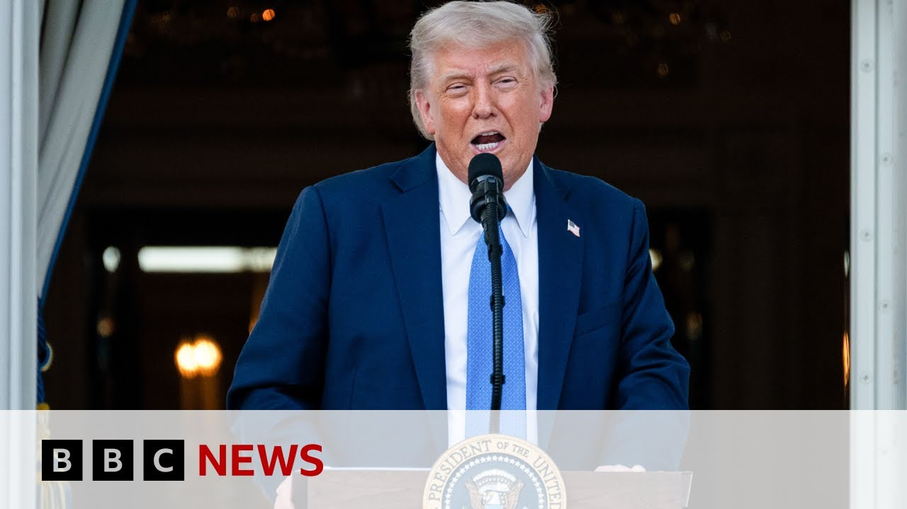

【特朗普签署禁令禁止12国公民入境美国 | BBC新闻】
Summary: U.S. President Trump has signed a travel ban prohibiting citizens from 12 countries from entering the United States and partially restricting entry for citizens from 7 additional countries, including some Asian nations. The ban will take effect next Monday and aims to prevent the entry of foreigners who have not been properly vetted, in order to protect the U.S. from the threat of terrorist attacks. However, the ban may face legal challenges and does not include the religious discrimination language present in the previous version.
摘要： 美国总统特朗普签署旅行禁令，禁止12国公民入境，并部分限制另外7国公民入境，包括一些亚洲国家。禁令将于下周一生效，旨在防止未通过审查的外国人入境，保护美国免受恐怖袭击威胁。但该禁令可能面临法律挑战，且未包含上次的宗教歧视语言。

⏱️ Estimated Reading Time: 6 min
📚 高考3500生词 📚 雅思生词 📚 托福生词 📚 GRE生词 📚 UP主推荐生词
We begin in the US where President Donald Trump has signed a travel ban to stop people from 12 countries from entering the United States.
我们首先关注美国，总统唐纳德·特朗普签署了一项旅行禁令，禁止来自12个国家的人进入美国。
The proclamation, which is similar to an executive order, also partially restricts people from seven other nations, including some in Asia.
这项类似于行政命令的公告还部分限制了来自其他七个国家的人，包括一些亚洲国家。
The 12 countries affected are Afghanistan, Chad, the Republic of the Congo, Equatorial Guinea, Eratraa, Haiti, Iran, Libya, Myanmar, Somalia, Sudan, and Yemen.
受影响的12个国家是阿富汗、乍得、刚果共和国、赤道几内亚、厄立特里亚、海地、伊朗、利比亚、缅甸、索马里、苏丹和也门。
He also said he was partially restricting and limiting the entry into the US of nationals from an additional seven countries.
他还表示，他正在部分限制来自另外七个国家的公民入境美国。
They are Bundai, Cuba, Lao, Sierra, Leon, Togo, Turk Menistan, and Venezuela.
这些国家是文莱、古巴、老挝、塞拉利昂、多哥、土库曼斯坦和委内瑞拉。
President Trump spoke about some of his reasoning behind the move.
特朗普总统谈到了这一举措背后的一些理由。
The recent terror attack in Boulder, Colorado, has underscored the extreme dangers posed to our country by the entry of foreign nationals who are not properly vetted, as well as those who come here as temporary visitors and overstay their visas.
最近科罗拉多州博尔德的恐怖袭击凸显了未经适当审查的外国人入境以及临时访客逾期居留对我国构成的极端危险。
We don't want them.
我们不想要他们。
Our North America correspondent, Jake Quan, has the latest from Washington.
我们的北美记者杰克·权从华盛顿发回最新消息。
President Trump said this this proclamation will go into effect next week on Monday.
特朗普总统表示，这项公告将于下周一生效。
So if you do not already have a visa, if you do not already have a refugee status, uh you will be restricted from entering the country.
因此，如果你还没有签证或难民身份，你将受到入境限制。
And President Trump promised that this measure will protect Americans from future terrorist attacks or any any kind of threat on American lives.
特朗普总统承诺，这项措施将保护美国人免受未来恐怖袭击或任何对美国人的威胁。
and he actually pointed out the the Colorado attack where a man uh who was staying in America according to the White House illegally uh had thrown a malt of cocktail at a group of protesters as one of the reason uh to to uh introduce this kind of travel ban.
他还指出科罗拉多州的袭击事件是实施此类旅行禁令的原因之一，据白宫称，一名非法滞留在美国的男子向抗议者投掷了燃烧瓶。
However, there's no explanation of uh the fact that Egypt, where this suspect of the Colorado bombing is from, uh Egypt was not included in this list of countries.
然而，没有解释为什么科罗拉多爆炸案的嫌疑人来自埃及，但埃及并未被列入禁令国家名单。
Uh so there is some inconsistency there.
因此，这里存在一些不一致之处。
Uh as well as there is the question of how long uh can this uh proclamation stay.
此外，还有一个问题是这项公告能持续多久。
uh in the first time he did this in 2017, the proclamation of travel ban which he dubbed Muslim ban uh which slept against majority Muslim countries was bogged down in the American court system uh facing multiple challenges in different courts across America and that it had to be amended multiple times before it was eventually held up by the Supreme Court.
2017年他首次实施这项被称为“穆斯林禁令”的旅行禁令时，针对多数穆斯林国家的禁令在美国法院系统中陷入困境，面临全国多地法院的多项挑战，最终在多次修改后才被最高法院维持。
So, it faced a lot of challenges the first time and it is expected to uh face similar challenges the second time, including political and legal.
因此，第一次面临了许多挑战，预计第二次也将面临类似的政治和法律挑战。
Jake, I'm really glad you mentioned the last time Trump did this in his first administration because that caused a lot of people for a lot of problems rather for people uh perhaps people who were Iranian originally, who were um who still had the passport but living in America.
杰克，我很高兴你提到特朗普在上届政府中实施的禁令，因为这给许多人带来了很多问题，尤其是那些原籍伊朗但仍持护照居住在美国的人。
I mean, what's the response likely to be to this latest travel ban?
我是说，人们对这项最新旅行禁令的反应可能会怎样？
In a way, some some described this proclamation as a more savvier, more strategic version of his first terms Muslim ban.
在某种程度上，一些人将这项公告描述为比第一届任期的“穆斯林禁令”更精明、更具战略性的版本。
I mean, this uh proclamation was not a surprise.
我是说，这项公告并不令人意外。
One of his day one executive order actually asked a review of different countries around the world that has consistently high number of people overstaying their visa or maybe pose a threat to America by having a big terrorist presence.
他上任首日的行政命令之一实际上要求审查全球范围内签证逾期居留人数持续较高或恐怖主义势力庞大的国家。
Uh as well as looking at countries that does not have a central government that is uh strong enough to vet the the the people's identity that is traveling to America.
同时还审查那些中央政府不够强大、无法审查赴美人员身份的国家。
So the first time that this uh travel ban was introduced, the reason it was defeated in the courts was that it seemed to discriminate against a certain religion which is uh the Islam.
因此，第一次推出旅行禁令时，它在法庭上失败的原因是它似乎歧视了伊斯兰教这一特定宗教。
This time this proclamation does not include such language.
这次公告没有包含此类语言。
So it would is expected to fare better in the court system.
因此预计在法院系统中的表现会更好。
It seems that President Trump and the White House had learned the lesson from the first time.
看来特朗普总统和白宫从第一次中吸取了教训。
Another difference from the first proclamation is that that one was supposed to last maybe 60 days or 90 days.
与第一次公告的另一个区别是，上一次预计持续60或90天。
This time it does not have an end date.
这次没有截止日期。
They say that after a certain period there will be a review of whether they should stay or not.
他们表示，经过一段时间后会审查是否继续实施。
Uh but for now this is expected to stay indefinitely.
但目前预计将无限期持续。